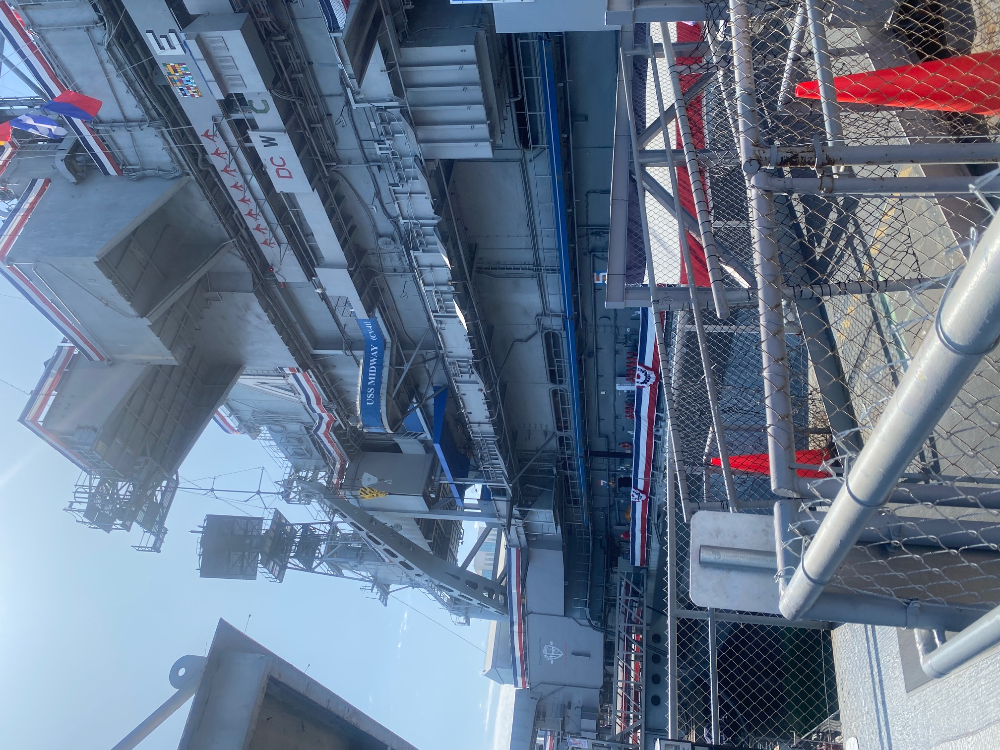

We had rejigged our plans to be in Universal on Saturday night for the Hogwarts light show. That was a great end to the day. Let’s not talk about coming home to find the fridge having been left open for 10 hours.
Alison woke up feeling ill and in need of pain relief. Freya woke up very excited at the prospect of going to the original Abby Lee Miller Dance Studios. I hope that means very little to all of you. Freya used to watch Dance Moms when she was younger and still loves watching reruns. She’s found a Dance Moms channel on the TV at the ranch and is watching too much.
The original studio where it was filmed is around Hollywood and she wanted to drive past. She also wanted to see the Walk of Fame (the stars on the ground near the Chinese Theatre). A plan was formed: buy some paracetamol (with a different name that you can buy in jars with 1,000 tablets), drive past the famous dance studio, drive through Beverly Hills, stop at some pre-booked parking 2 mins from the Chinese Theatre, then a short drive to the Universal theme park.
I managed to buy the smallest packet of paracetamol possible (still more the legal maximum in the UK) and drive vaguely near the dance studio (thanks to Jake combining a US data plan with the TomTom). We could park for free for 2 hours a couple of blocks away, so we did. The other 3 walked the last bit, but I stayed in the car to avoid it being stolen or me being murdered.
Freya was disappointed. The studio was closed and there was just a tacky shop with Dance Mom merchandise, the place was a bit scruffy and a beggar who they had refused to give money to made a shouty comment about how short her dress was as they walked past. They hurried back to the car via a different route. Nice.
We then drove through Beverly Hills along famous boulevards (like Santa Monica, Hollywood and Sunset) and crossed famous drives (like Rodeo). Some of that turned out to be Route 66 too. Alison reminisced about the classic romantic comedy about a manipulative old nasty business man picking up a street prostitute and then he lied to friends, family and hotel staff about it.
Jake was very excited around this part of town. He saw the following cars (which he texted me later): Lamborghini Hurrican, Bentley Continental, Aston Martin DB9, Lamborghini Urus, Lamborghini Hurrican Spider, Lamborghini Hurrican Spider SVJ, Ford Bronco, Lamborghini Aventador, Mustang Mach-E, Acura, Corvette Stingray C7, Hyundai Veloster N
The satnav took us via the front of the Chinese Theatre and the main Walk of Fame on the way to the car space booking. The streets were heaving with tourists and people in fancy dress selling photo opportunities. We all agreed that we didn’t need to stop or get out so drove straight to the theme park.
That early afternoon trip was mainly for Freya to see famous locations and Jake was willing to tag along. In the end, he had the best time, spotting supercars.
We arrived at the Universal theme park too early, so we stopped for a Starbucks in a shady spot of the shopping area just outside the theme park. We went into the theme park and decided to redo the World Famous Studio Tram Tour. It was great again. We had a different guide, whose script was 80% different to the first guide, who used the pre-recorded videos a bit differently. We were also at the back rather than the front of the tram, and we sat the opposite way round so could see the other side (left v right) compared to the first time. The route was a bit different too.

As expected for a Saturday, the queues were long so I suggested the Waterworld show, which I’d mentioned a few times. This time, I persuaded them it was a good idea. And it definitely was. The show was genuinely spectacular, with people diving from a crazy height, various boats, zip wires, massive explosions, fireworks and a plane crash. It was on a different level to everything similar that we’ve seen.
We did some shopping and had some tea. Alison was feeling much better, but not brilliant. The other 3 of us went back into the park to go on the Simpsons, while she did some excellent bag carrying back to the car and buying herself a birthday present. We joined the Simpsons queue but the wait times were going up so much that we thought we might miss the light show. We ducked out of the queue and the kids rode the main Harry Potter ride again. Jake was proud of himself as he kept his eyes open during the whole of the spider section, while Freya held his hand.
The whole vibe of Hogsmeade changed at night. There were death eaters walking around, with actors having wand battles. It was heaving as people congregated for the 9:10 light show. We’d seen the guidance to avoid the first show as it is really busy. They were right as it was horrible. The 3 of us left a back way and met Alison. The show started at about 8:50, presumably as it was getting dangerously busy. We aimed for the 9:30 show but accidentally caught the end of one that started around 9:10. Alison turned her back to avoid spoiling the show.

When 9:30 came, all around the place had a nice vibe, but not a crush. The light show was very effective, particularly the force field shimmer and rocks falling out of the mountain. It was very clever, but no real narrative and not holistic, like Disney had been last night.
Quick and easy trip home. I heard the fridge beeping as we entered the ranch and I realised that meant 10 hours with an open door. We had to throw away remnants of food, but the wine and Smirnoff Ice was safe. Phew!
It was still only 10:30 so the proper grown-ups decided to jump in the hot tub. Overall, a chilled and fun day.